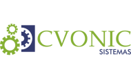
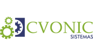

Sonhador e Empreendedor
André Velho é um novo empreendedor da cena florianopolitana, um sonhador desde pequeno em sua cidade natal
da serra catarinense Urubici. Ele sempre gostou muito de ler e escrever e tinha uma paixão especial em fazer
invenção malucas, gostava muito de descobrir como as coisas funcionavam, exemplo uma vez que ele logo
que ganhou seu primeiro videogame queria ver como eram produzidos os personagem desmontou o aparelho e aprendeu duas coisas
naquele dia, uma que ela não conseguiria fazer o jogo funcionar de novo mas que a curiosidade te leva descobrir novos caminhos.
Na escola conseguiu um espaço para mostrar suas invenções na aula de historia da querida Professora Rita,
onde toda semana ele levava um aparelho aloucado para mostrar aos colegas da classe: um encadernar de livros, ou um controle
remoto muito simples para trocar de canal batendo palmas ou talvez um painel de luz, que acendias em palavras baseado em
um cartão furado. Nem mesmo ele, nesta época sabia que essa vontade de criar era parte da vocação
de empreendedor.
Logo a vida colocaria André em posição de responsabilidade, irmão de gêmeas Janaine e
Jaqueline, ajudava a tomar conta dos bebês o que lhe parece hoje tão difícil quanto desenvolver um
projeto complexo já que era tudo em dobro. Mas nesta época desenvolveu sua responsabilidade.
Ainda no ensino fundamento começou a fazer teatro, fez dois anos e descobriu uma paixão desenvolveu sua criatividade e tirou sua inibição em falar em publico, mas o que ele aprendeu foi que para potenciar ou realizar um projeto com êxito testando diversos elementos entre cenário, figurino, muito ensaio e a união de todos os atores além de foco e paixão pelo trabalho, uma vez que o único pagamento seriam as palmas dos espectadores.
Logo que finalizou os estudo no ensino médio, começou seu primeiro trabalho remunerado com intuído de pagar uma universidade de qualidade, e não se demorou em iniciar sua universidade em Ciência da Computação, tão logo iniciou sua carreira em tecnologia iniciando como estagiário na Marconsoft, onde potencializou suas habilidades de programação e desenvolvimento de softwares gerenciais para pequenas e grandes empresas de Santa Catarina; mas logo sentiu que deveria ganhar mais habilidade e ter noção de como trabalha e cresce as grandes empresas de tecnologia,
e foi em busca da melhor empresa de sistema de Santa Catarina Softplan onde passou quase dois anos e pode contribuir com seu trabalho e alem do mais conhecer como as grandes empresas trabalham e geram negócios através da observação, foi quando decidiu empreender e impactar a sociedade com seus projetos e suas ideias sempre com plena concepção em seu propósito de levar serviços e negócios para
desenvolver empresas com criatividade e perspectiva de futuro.
 
